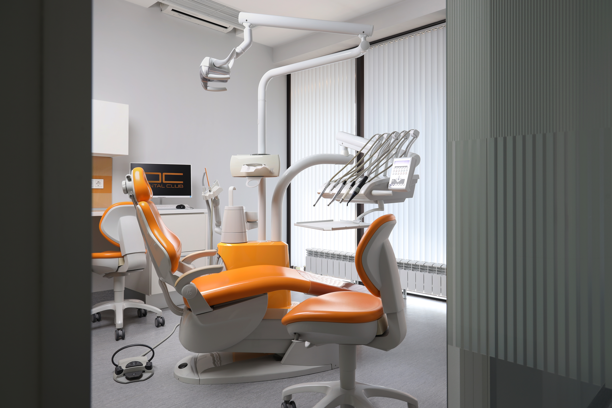
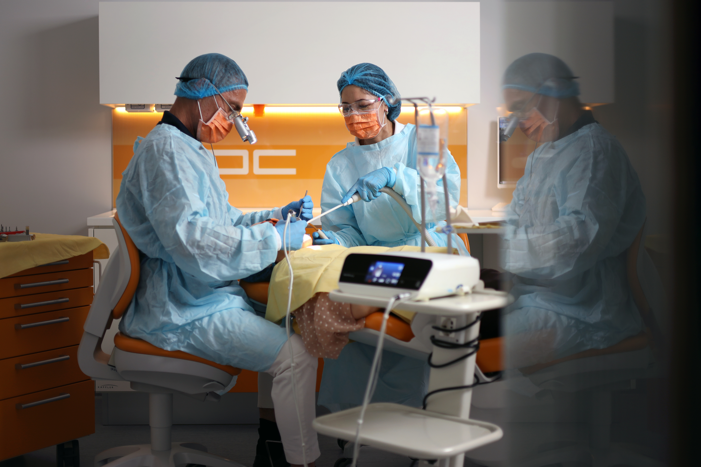
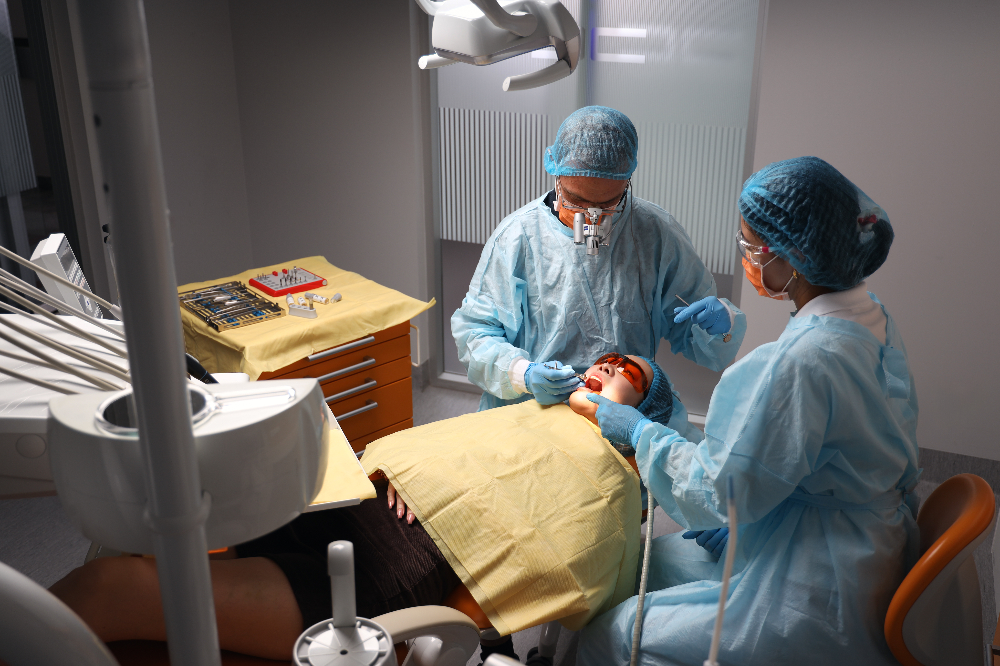
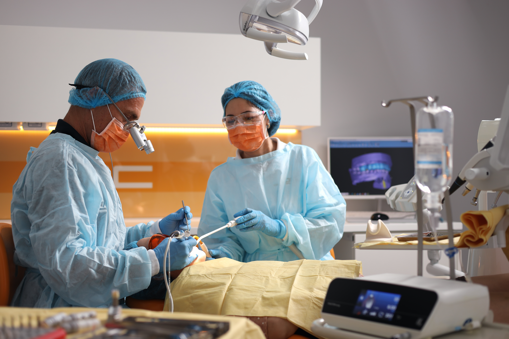
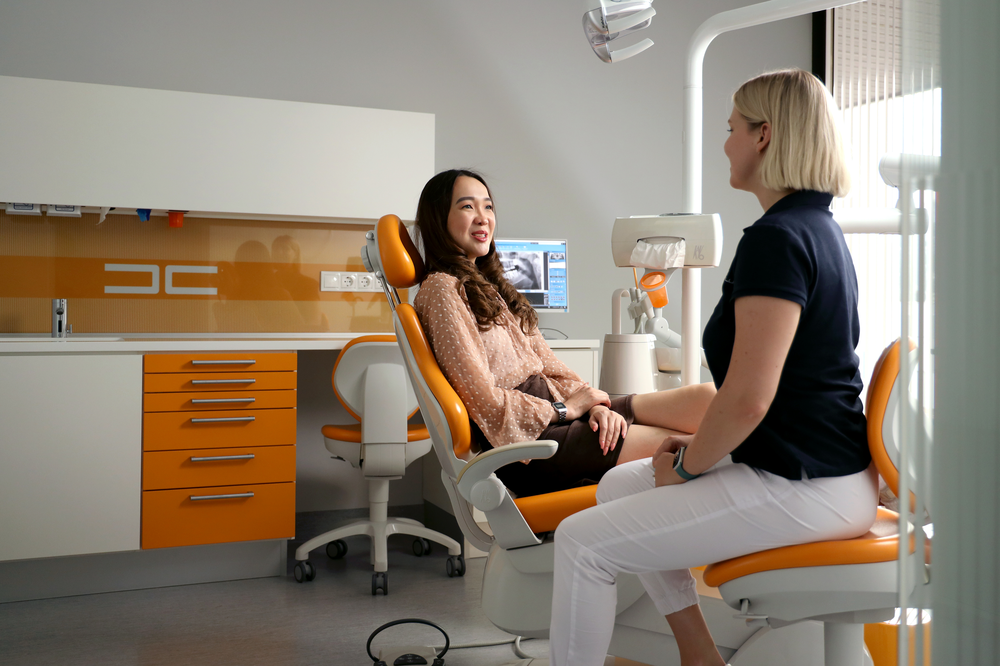
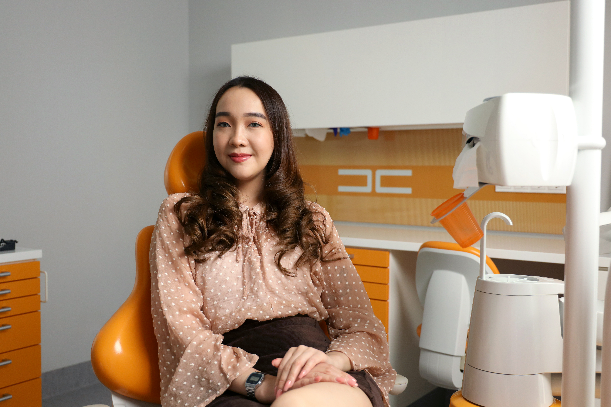

СЛОЖНАЯ ИМПЛАНТАЦИЯ
Часто в нашу клинику обращаются пациенты, которым отказали устанавливать имплантаты в других местах или предложили длительные манипуляции по наращиванию кости.
В Dental Club мы можем произвести установку имплантатов даже в самых сложных ситуациях.


Мы используем навигационную стоматологию. Операции планируются в
цифровом формате, для исключения неточности и при наличии даже
небольшого количества костной ткани мы сможем установить
имплантат,
не нарушая целостности кости.
Предварительно, перед самой операцией, мы производим виртуальную установку имплантатов в цифровой среде, после чего протокол имплантации переводим в шаблон. Использование шаблона позволяет провести операцию без разреза и избежать осложнений после имплантации.
Для особо сложных случаев, в нашем арсенале имеется методика от лидера в имплантологии, фирмы Nobel Biocare – “All-on-4” и “All-on-6”. При состояниях, близких к полной адентии, с помощью этой методики возможно в одно посещение удалить разрушенные зубы, установить имплантаты под углом и с помощью мульти-юнит абатментов прикрепить к ним несъёмный протез.


Главный врач клиники прошёл обучение данной методике у таких светил современной имплантологии, как Мало (Испания, Аликанте), Тициано Тестори (Италия).
В самых сложных случаях, при недостатке кости, на базе нашей клиники мы можем установить скуловые имплантаты Zygoma (Nobel Biocare, США). Первая в Казахстане операция по их установке была проведена в Dental Club!


Этапы сложной имплантации (All-on-4):
- Диагностика и планирование: 3D снимок, сканирование модели зубов, изготовление хирургического шаблона.
- Удаление разрушенных зубов.
- Установка имплантата, фиксация мульти-юнит абатментов и несъемного протеза.
По показаниям, врач ортопед установит несъёмные протезы либо в день операции, либо через 1 – 2 дня.